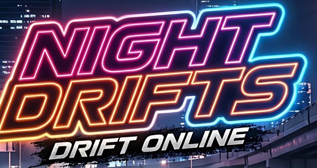

Drift score
0
km/h
N
Loading…
Cold start
Press I or Enter · then hold Enter to rev
‹ Dust Yard

Time
Day
Night
Garage
Classic
3 cars
Tokyo Drift
3 cars
Mazda RX-7
Dom's red VeilSide C-II. Tuned rotary, rear-drive, revs to 8,500.
Acura Integra
'94 LS sedan, rear-drive swap with a VTEC four. Light and lively.
JDM drift car
Rear-drive and powerful. Slides on the throttle.
VeilSide RX-7
Han's widebody Fortune. Same rotary, same feel as the RX-7.
Skyline GT-R R34
Brian's silver-blue R34, set up rear-drive to slide.
Mitsubishi Eclipse
Brian's green '95 Eclipse with the green neon, rear-drive swap.
Driver name
Online
Free drive
Play
Back to garage
Drift online
Free drive
Copy invite
Loading the circuit…
Controls
W / S
Throttle / brake (and reverse)
A / D
Steer
Space
Handbrake
E / Q
Shift up / down (M toggles manual gears)
R
Back on the road
Esc
Menu
Power
Weight
Drive
RWD